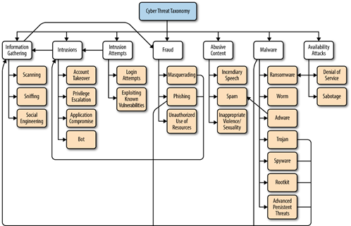

Some examples of real-world uses of machine learning in security.
A malware attack is when cybercriminals create malicious software that’s installed on someone else’s device without their knowledge to gain access to personal information or to damage the device, usually for financial gain. Different types of malware include viruses, spyware, ransomware, and Trojan horses.
Advanced data analytics using Machine Learning and AI, it is possible to develop products for operations, security and automation solutions to detect malware, ransomware, trojans and other threats. As an example, company like SparkCognition, CUJO AI are developing such solutions.
Phishing attacks are the practice of sending fraudulent communications that appear to come from a reputable source. It is usually done through email. The goal is to steal sensitive data like credit card and login information, or to install malware on the victim’s machine.
Machine Learning and AI based algorithms can be developed that can recognize patterns and proactively predict the Phishing Attacks. Security solution vendor like SentinelOne is developing ML and AI based solutions to detect phishing emails.
Several spam filtering approaches are used these days by email clients and other applications. To ensure the security and that these spam filters are continuously updated, they are powered by ML algorithms. Machine learning based classification techniques are widely used for this purpose. The latest trick of spammers can easily be detected by observing specific patterns and by rule-based spam filtering.
Artificial intelligence and machine learning can be used to separate critical risks from routine network activity, and to identify chains of activities that result in attacks and can inform security teams to get ahead of those attacks. Business like Versive uses their Versive Security Engine (VSE) to perform such task of identifying critical cyber security risks based on advanced analytics.
Machine learning-based anomaly detection module can help the business to identify the compromised customer profile and account, privilege abuse and other form of anomalies. Identification of anomalous data help the security team to more easily and quickly respond to the threats. Businesses such as Anomali provides ML based technology to help other businesses and organizations identify suspicious activity before it’s in their networks.
AI and ML platform can help to prevent threats before they can cause damage, predicting and protecting against file-less attacks, and zero-day payload execution attack. Unsupervised or semi-supervised machine learning is a good choice towards such solution as it can learn profiling billions of file samples, appraising files for threats, dictating whether or not a threat exists. Platform developed by Cylance can protect against such attacks.
ML and AI-based techniques can constantly investigate data and compare it against non-traditional data sources to give enterprises an early insight into vulnerabilities. Additionally, algorithms can constantly monitor malicious actors and use AI and ML to predict attacks and suggest proper defenses. Such an approach is used by Sovereign Intelligence’s security defense platform.
Look at the following figure related to the cyber threat taxonomy. Have you ever thought how many of these cyber threats can be prevented or detected by ML and AI-based approaches?

Fig: Cyber Threat Taxonomy tree [Machine Learning and Security by David Freeman; Clarence Chio Published by O'Reilly Media, Inc., 2018]